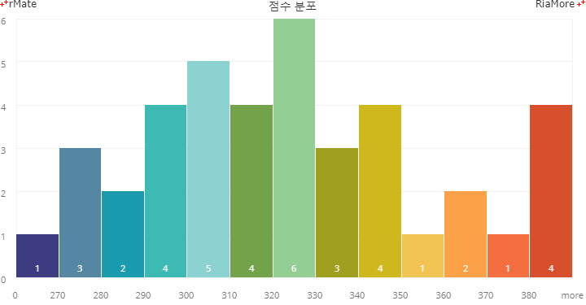
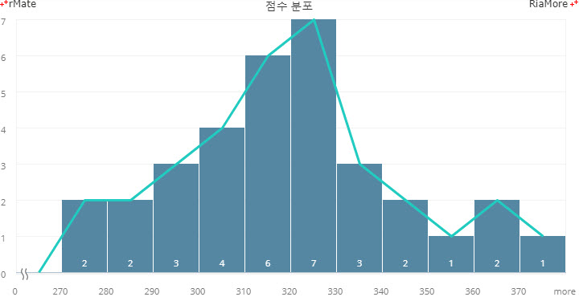
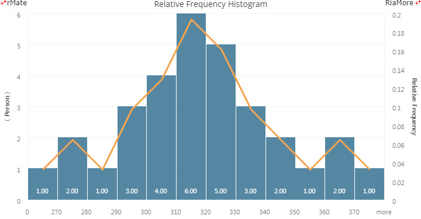
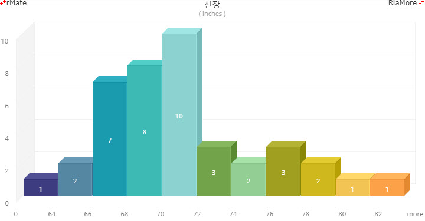

히스토그램 차트
히스토그램 차트는 컬럼 차트와 아주 유사하지만 컬럼 차트와 다른 점은 수평축 상의 연속적인 구간(bin)들에 대한 측정값이 수직 막대로 표현된다는 것입니다.
이와는 다르게 컬럼 차트에서는 비연속적인 카테고리 데이터에 대한 측정값이 세로 막대로 표현됩니다.
그리고 일반적으로 컬럼 차트에서는 이웃한 수직 막대 사이에 간격을 두지만 히스토그램 차트는 수직 막대들 사이의 간격을 두지않고 연속적으로 표현합니다.
히스토그램 차트는 <Histogram2DChart> 노드의 series 속성값에 <Histogram2DSeries> 노드를 설정하여 생성할 수 있습니다.
그리고 수평축의 생성을 위해서 <horizontalAxis> 속성에 <HistogramCategoryAxis> 노드를 설정해야 하며,
축의 스타일링은 <HistogramAxis2DRenderer> 노드를 <horizontalAxisRenderers> 속성에 정의하여 할 수 있습니다.
다음은 특정 학급의 성적 분포를 히스토그램 차트로 표현하는 코드와 이를 적용해서 출력한 차트의 예제입니다.
<Histogram2DChart showDataTips="true" binRange="[270,280,290,300,310,320,330,340,350,360,370,380]">
<horizontalAxis>
<HistogramCategoryAxis id="hAxis" categoryField="histogramXField"/>
</horizontalAxis>
<horizontalAxisRenderers>
<HistogramAxis2DRenderer axis="{hAxis}"/>
</horizontalAxisRenderers>
<series>
<Histogram2DSeries labelPosition="inside" yField="grade" displayName="Number of Persons" itemRenderer="BoxItemRenderer" labelAlign="bottom" insideLabelYOffset="-6" color="#ffffff">
<fills>
<SolidColor color="#3d3c80"/>
<SolidColor color="#5587a2"/>
<SolidColor color="#1a9bae"/>
<SolidColor color="#3dbab4"/>
<SolidColor color="#8cd2d0"/>
<SolidColor color="#72a34a"/>
<SolidColor color="#93ce94"/>
<SolidColor color="#a09f20"/>
<SolidColor color="#cfb81d"/>
<SolidColor color="#f2c454"/>
<SolidColor color="#fca148"/>
<SolidColor color="#f36f40"/>
<SolidColor color="#d84f2b"/>
</fills>
</Histogram2DSeries>
</series>
</Histogram2DChart>

See the CodePen 알메이트 차트 - 히스토그램 차트
히스토그램 차트의 수평축에 표시되는 구간(bin)은 <Histogram2DChart> 노드의 binRange 속성에 지정합니다.
차트에 적용되는 데이터들은 각 구간에 자동으로 합산되며, 구간을 초과하는 데이터는 additionalBinRange 속성(기본값: “more”)에 정의된 명칭의 구간에 합산됩니다.
| 속성명 |
유효값 (*: 기본값) |
설명 |
| binRange |
숫자 배열
기본값: [0,20,40,60,80,100]
|
구간을 지정합니다.
|
| additionalBinRange |
텍스트
기본값: more
|
binRange 속성에 설정된 값을 초과하는 구간에 대한 명칭을 지정합니다.
|
히스토그램 차트에 분포선 표시
히스토그램 차트에 분포선은 <Histogram2DChart> 노드에 <Line2DSeries> 노드를 정의하여 표현합니다.
이 때 <Line2DSeries> 노드의 yField 속성에는 <Histogram2DSeries> 노드에 정의된 yField 속성값과 동일한 값을 지정합니다.
다음은 분포선을 표시하기 위해서 yField 속성을 점수 필드명(grade)으로 지정한 코드와 이를 적용적용해서 출력한 차트의 예제입니다.
<Histogram2DChart showDataTips="true" binRange="[270,280,290,300,310,320,330,340,350,360,370]">
...
<series>
<Histogram2DSeries labelPosition="inside" yField="grade" displayName="Number of Persons" itemRenderer="BoxItemRenderer" labelAlign="bottom" insideLabelYOffset="-6" color="#ffffff">
<fill>
<SolidColor color="#5587a2"/>
</fill>
</Histogram2DSeries>
<Line2DSeries yField="grade">
<lineStroke>
<Stroke weight="3" color="#21cbc0"/>
</lineStroke>
</Line2DSeries>
</series>
</Histogram2DChart>

See the CodePen 알메이트 차트 - 히스토그램 차트에 분포선 표시
히스토그램 차트에 상대분포 표시
히스토그램 차트의 상대분포는 특정 구간(bin)에 합산된 데이터 개수를 전체 데이터 개수로 나눈 값입니다.
상대분포 선은 <Line2DSeries> 노드의 yField 속성에 “relativeFrequency” 를 지정하고 상대분포 값을 위한 세로 축은 차트의 오른쪽에 표시합니다.
다음은 이에 대한 코드와 이를 적용해서 출력한 차트의 예제입니다.
이 예제에서는 <Line2DSeries> 노드의 <verticalAxis> 속성에 <LinearAxis> 노드를 정의하여 차트의 오른쪽에 상대분포 값을 위한 축을 표시하였습니다.
<Histogram2DChart showDataTips="true" binRange="[270,280,290,300,310,320,330,340,350,360,370]">
<verticalAxis>
<LinearAxis id="vAxis1" title="( Person )"/>
</verticalAxis>
<horizontalAxis>
<HistogramCategoryAxis id="hAxis" categoryField="histogramXField"/>
</horizontalAxis>
<horizontalAxisRenderers>
<HistogramAxis2DRenderer axis="{hAxis}" showLine="false"/>
</horizontalAxisRenderers>
<verticalAxisRenderers>
<Axis2DRenderer axis="{vAxis1}" placement="left" verticalAxisTitleAlignment="vertical" axisTitleStyleName="titleStyle">
<axisStroke>
<Stroke color="#56a1bf" weight="4"/>
</axisStroke>
</Axis2DRenderer>
<Axis2DRenderer axis="{vAxis2}" placement="right" axisTitleStyleName="titleStyle">
<axisStroke>
<Stroke color="#2C78B6" weight="4"/>
</axisStroke>
</Axis2DRenderer>
</verticalAxisRenderers>
<series>
<Histogram2DSeries formatter="{nft}" labelPosition="inside" yField="grade" displayName="Number of Persons" itemRenderer="BoxItemRenderer" labelAlign="bottom" insideLabelYOffset="-10" color="#ffffff">
...
</Histogram2DSeries>
<Line2DSeries yField="relativeFrequency">
<lineStroke>
<Stroke color="#f4a44f" weight="3"/>
</lineStroke>
<verticalAxis>
<LinearAxis id="vAxis2" title="Relative Frequency"/>
</verticalAxis>
</Line2DSeries>
</series>
</Histogram2DChart>

See the CodePen 알메이트 차트 - 히스토그램 차트에 상대분포 표시
3D 히스토그램 차트
3D 히스토그램 차트는 <Histogram3DChart> 노드의 series 속성값에 <Histogram3DSeries> 노드를 설정하여 생성할 수 있습니다.
다음은 이에 대한 코드와 이를 적용해서 출력한 차트의 예제입니다.
<Histogram3DChart selectionMode="none" showDataTips="true" binRange="[64,66,68,70,72,74,76,78,80,82]">
...
<series>
<Histogram3DSeries labelPosition="inside" yField="height" displayName="Inches" color="#ffffff">
<fills>
<SolidColor color="#3d3c80"/>
<SolidColor color="#5587a2"/>
<SolidColor color="#1a9bae"/>
<SolidColor color="#3dbab4"/>
<SolidColor color="#8cd2d0"/>
<SolidColor color="#72a34a"/>
<SolidColor color="#93ce94"/>
<SolidColor color="#a09f20"/>
<SolidColor color="#cfb81d"/>
<SolidColor color="#f2c454"/>
<SolidColor color="#fca148"/>
<SolidColor color="#f36f40"/>
<SolidColor color="#d84f2b"/>
</fills>
</Histogram3DSeries>
</series>
</Histogram3DChart>

See the CodePen 알메이트 차트 - 3D 히스토그램 차트